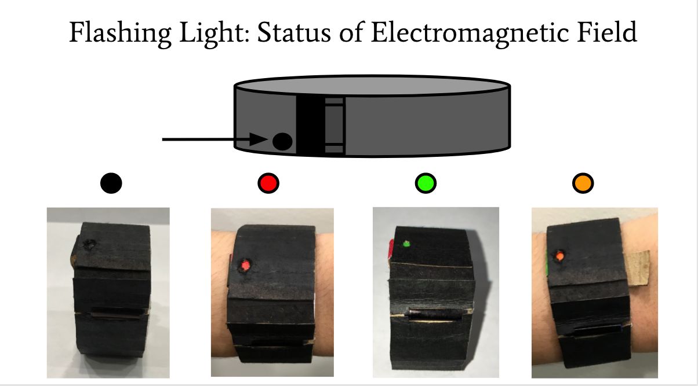
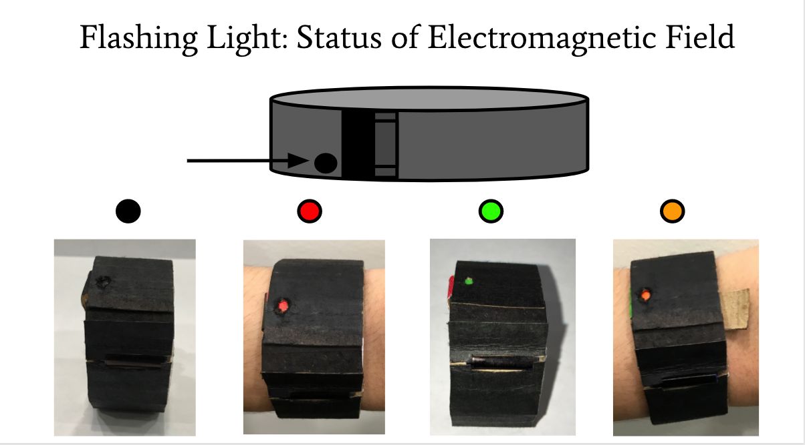

After deciding on an object to design, I developed several potential users. The main industries are for users who are open to alternative medicine, people who keeping track of their health using wearable technology in general, and potentially senior citizens who are more prone to get sick. From the larger range of potential users I narrowed the scope to Lucy, one persona who covers a large populations, but it is also narrow enough to design for. The reason I chose Lucy is because she has the desire to get real time feedback about her health, and is generally relatable to most americans because she has a 9-5 job, children, a lot of responsibilities and very limited free time.

 
